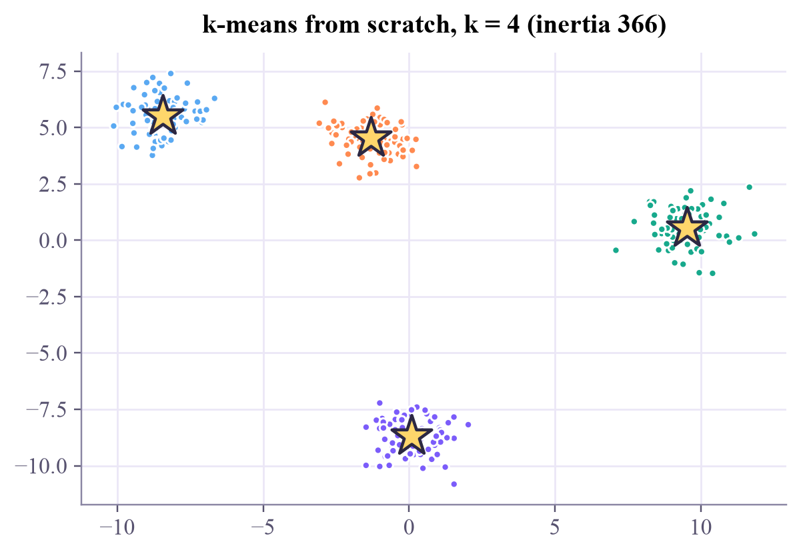
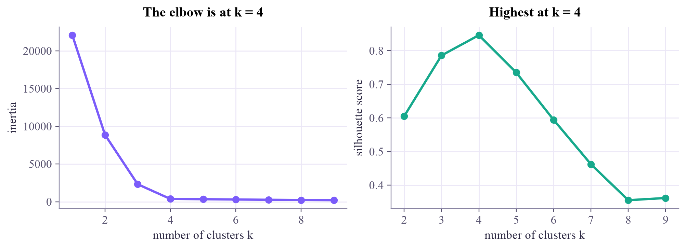
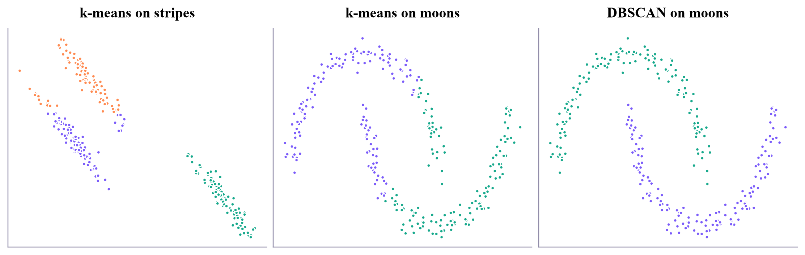
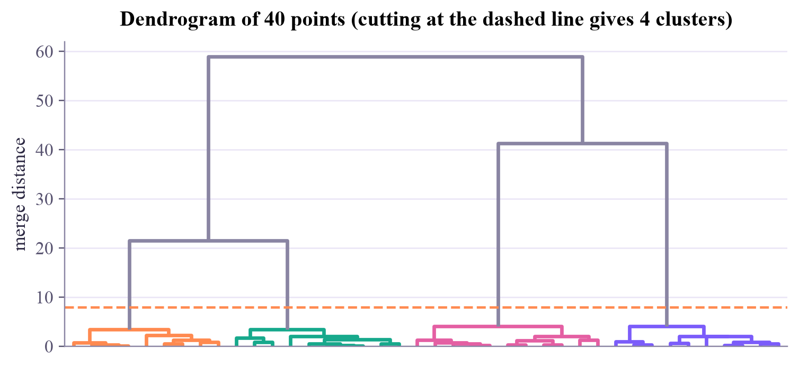

Machine Learning
 about 12 min
about 12 min ml-w6d1.ipynb
ml-w6d1.ipynb
Clustering with k-means
No labels at all: find the groups hiding in the data. Two simple steps, repeated, do most of the work, and a good start does the rest.
In this lesson you will
- Run k-means by hand: assign, then update, until nothing moves
- Choose the number of clusters with the elbow and the silhouette score
- Know when k-means fails, and what k-means++ starts fix
Warm-up
1 minA jar of mixed buttons

Someone hands you a jar of mixed buttons and says "sort these". No categories, no examples, no labels. You'd still manage: big ones here, small ones there, red ones together. That is clustering, the classic task of unsupervised learning: this week, the data comes without answers.
Big idea
4 minAssign, update, repeat
k-means describes groups by center points (centroids). From some starting centers it repeats two steps:
- Assign: every point joins its nearest center.
- Update: every center moves to the mean of the points that joined it.
It stops when nothing changes. Both steps can only lower the inertia, the total squared distance from points to their centers, so the algorithm always settles:
But it settles in a local minimum that depends on the start: two centers that begin in the same blob may never separate. k-means++ starts better: the first center is a random point, and each next one is drawn with probability proportional to its squared distance from the centers chosen so far, so the starts spread out. Libraries also run several starts and keep the best.
Choosing . Inertia always falls as grows (with it's zero!), but it falls steeply only until matches the real groups: look for the elbow. The silhouette score is a second opinion: for each point, compare the mean distance to its own cluster () with the mean distance to the nearest other cluster ():
Averaged over all points, higher is better.
What k-means assumes. Each point goes to the nearest center, so the borders are straight lines halfway between centers. That suits round groups of similar size, and fails for long stripes or curved shapes. And since everything is distances, features on different scales must be standardized first (week 1).
Hierarchical clustering
Start with every point alone and keep merging the two closest groups. The merge history is a tree, the dendrogram; cut it at any height to get clusters, with no fixed in advance.
DBSCAN
A cluster is a region where points are packed densely; sparse points in between are "noise". It follows curved shapes and finds the number of clusters by itself.
Assign to the nearest center, move the center to the mean, repeat: simple, fast, and only as good as its start and its assumption of round groups.
Play
4 minWatch k-means think
Press Step to alternate between the two moves, or Play to run until it settles. The background shows which center owns each region; the chart shows the best inertia found for each .
Try this
With the 4 round blobs, press Random start several times until two stars begin in the same blob, then Play: it gets stuck. A k-means++ start rarely does. Then switch to the stripes and the moons: k-means converges happily, with low inertia, and still gets the groups wrong.
Code
2 minClustering in Python
The notebook for this lessonEvery code cell below, with what it printed, is in
ml-w6d1.ipynb. To change the code and run it yourself, open the notebook in Google Colab (free, in your browser) or download it for your own Jupyter.import numpy as np
import matplotlib.pyplot as plt
from sklearn.datasets import make_blobs, make_moons
X, _ = make_blobs(n_samples=300, centers=4, cluster_std=0.8, random_state=7) # we throw the labels away
def kmeans(X, k, steps=20, seed=0, centers=None):
rng = np.random.default_rng(seed)
if centers is None:
centers = X[rng.choice(len(X), k, replace=False)] # start at k random points
for _ in range(steps):
distances = ((X[:, None, :] - centers[None, :, :]) ** 2).sum(axis=2) # (points, k)
assign = distances.argmin(axis=1) # step 1: nearest center
centers = np.array([X[assign == j].mean(axis=0) if np.any(assign == j) else centers[j]
for j in range(k)]) # step 2: move to the mean
inertia = ((X - centers[assign]) ** 2).sum()
return assign, centers, inertia
assign, centers, inertia = kmeans(X, k=4)
palette = np.array(["#7b5cfa", "#17a98c", "#ff8a50", "#5aa9f2", "#e45fa3", "#f0ac2e"])
plt.scatter(X[:, 0], X[:, 1], c=palette[assign], s=14)
plt.scatter(centers[:, 0], centers[:, 1], marker="*", s=420, c="#ffd66b", edgecolors="#2c2842", linewidths=1.5)
plt.title(f"k-means from scratch, k = 4 (inertia {inertia:.0f})")
plt.show()What it printed in the notebook
from sklearn.cluster import KMeans
from sklearn.metrics import silhouette_score
ks = range(1, 10)
models = [KMeans(n_clusters=k, n_init=10, random_state=0).fit(X) for k in ks]
silhouettes = [silhouette_score(X, m.labels_) for m in models[1:]] # needs at least 2 clusters
fig, (ax1, ax2) = plt.subplots(1, 2, figsize=(9, 3.2), layout="constrained")
ax1.plot(ks, [m.inertia_ for m in models], "o-", color="#7b5cfa")
ax1.set_xlabel("number of clusters k")
ax1.set_ylabel("inertia")
ax1.set_title("The elbow is at k = 4")
ax2.plot(list(ks)[1:], silhouettes, "o-", color="#17a98c")
ax2.set_xlabel("number of clusters k")
ax2.set_ylabel("silhouette score")
ax2.set_title(f"Highest at k = {int(np.argmax(silhouettes)) + 2}")
plt.show()What it printed in the notebook

from sklearn.cluster import DBSCAN
Xs, _ = make_blobs(n_samples=300, centers=3, cluster_std=0.6, random_state=170)
Xs = Xs @ np.array([[0.6, -0.6], [-0.4, 0.8]]) # stretch the blobs into stripes
Xm, _ = make_moons(n_samples=300, noise=0.06, random_state=0)
fig, axes = plt.subplots(1, 3, figsize=(10, 3.1), layout="constrained")
for ax, data, k, title in [(axes[0], Xs, 3, "k-means on stripes"), (axes[1], Xm, 2, "k-means on moons")]:
labels = KMeans(n_clusters=k, n_init=10, random_state=0).fit_predict(data)
ax.scatter(data[:, 0], data[:, 1], c=palette[labels], s=10)
ax.set_title(title)
labels = DBSCAN(eps=0.2, min_samples=5).fit_predict(Xm)
axes[2].scatter(Xm[:, 0], Xm[:, 1], c=palette[labels % len(palette)], s=10)
axes[2].set_title("DBSCAN on moons")
for ax in axes:
ax.set_xticks([])
ax.set_yticks([])
plt.show()What it printed in the notebook

from scipy.cluster.hierarchy import linkage, dendrogram
merges = linkage(X[:40], method="ward")
plt.figure(figsize=(8, 3.4))
dendrogram(merges, color_threshold=8, above_threshold_color="#8a85a3", no_labels=True)
plt.axhline(8, color="#ff8a50", ls="--", lw=1.5)
plt.ylabel("merge distance")
plt.title("Dendrogram of 40 points (cutting at the dashed line gives 4 clusters)")
plt.show()What it printed in the notebook

Your turn
2 minYour turn: k-means++ by hand
Write the k-means++ start, then compare 20 runs with random starts and 20 with k-means++ starts. How often does each get stuck?
def kmeans_pp_init(X, k, rng):
centers = [X[rng.integers(len(X))]]
while len(centers) < k:
# TODO: d2 = squared distance from every point to its nearest chosen center
# TODO: pick the next center with probabilities d2 / d2.sum() (rng.choice(len(X), p=...))
centers.append(X[rng.integers(len(X))]) # placeholder: a uniformly random point
return np.array(centers)
random_runs = [kmeans(X, 4, seed=s)[2] for s in range(20)]
pp_runs = [kmeans(X, 4, centers=kmeans_pp_init(X, 4, np.random.default_rng(s)))[2] for s in range(20)]
print(f"random starts : mean inertia {np.mean(random_runs):.0f}, worst {np.max(random_runs):.0f}")
print(f"k-means++ : mean inertia {np.mean(pp_runs):.0f}, worst {np.max(pp_runs):.0f}")Need a hint?
Squared distance to the nearest chosen center: ((X[:, None, :] - np.array(centers)[None, :, :]) ** 2).sum(axis=2).min(axis=1). Then rng.choice(len(X), p=d2 / d2.sum()) picks the index of the next center.
Show a solution
def kmeans_pp_init(X, k, rng):
centers = [X[rng.integers(len(X))]]
while len(centers) < k:
d2 = ((X[:, None, :] - np.array(centers)[None, :, :]) ** 2).sum(axis=2).min(axis=1)
centers.append(X[rng.choice(len(X), p=d2 / d2.sum())])
return np.array(centers)
random_runs = [kmeans(X, 4, seed=s)[2] for s in range(20)]
pp_runs = [kmeans(X, 4, centers=kmeans_pp_init(X, 4, np.random.default_rng(s)))[2] for s in range(20)]
print(f"random starts : mean inertia {np.mean(random_runs):.0f}, worst {np.max(random_runs):.0f}, "
f"stuck in {sum(r > 1.1 * min(random_runs) for r in random_runs)} of 20 runs")
print(f"k-means++ : mean inertia {np.mean(pp_runs):.0f}, worst {np.max(pp_runs):.0f}, "
f"stuck in {sum(r > 1.1 * min(random_runs) for r in pp_runs)} of 20 runs")
print("k-means++ makes bad starts much rarer, not impossible. That's why scikit-learn also restarts several")
print("times (n_init) and keeps the run with the lowest inertia.")What it printed in the notebook
random starts : mean inertia 2013, worst 6881, stuck in 10 of 20 runs k-means++ : mean inertia 653, worst 2284, stuck in 3 of 20 runs k-means++ makes bad starts much rarer, not impossible. That's why scikit-learn also restarts several times (n_init) and keeps the run with the lowest inertia.
Check yourself
1 minQuick check
Question 1 of 3
What are the two steps k-means repeats?
Question 2 of 3
The inertia drops a lot from to , then only a little for every after that. A good choice is…
Question 3 of 3
Two moons hook into each other. Why does k-means with split them wrongly?
Wrap-up
1 minToday in one sentence
Quantum link
Clustering needs a distance. Quantum states have natural ones, fidelity and trace distance, which the Quantum Computing tutorial covers this week. Quantum versions of k-means estimate distances with a small circuit called the swap test, which you'll build in the Quantum ML tutorial's first week.
Go deeper (optional)
ISLP section 12.4 (clustering methods: k-means, hierarchical clustering, and practical issues). k-means++ comes from Arthur and Vassilvitskii, "k-means++: the advantages of careful seeding" (2007).
Next in Machine Learning: soft clusters, where every point gets a probability for every group.

That's the lesson!
Tap the button to save it. Short and steady wins.
Marked by mistake? Undo